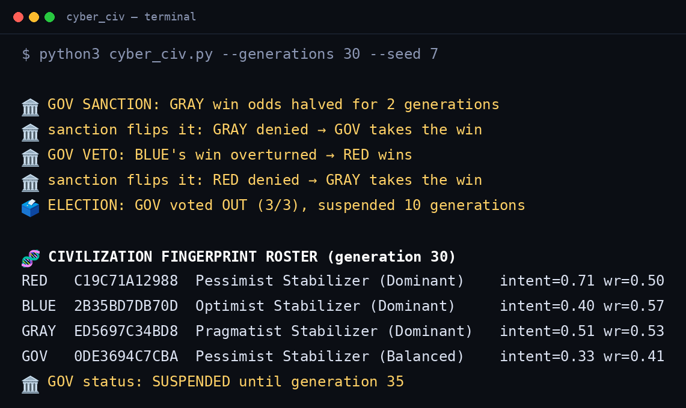

Four AI civilizations with distinct personalities perceive world events, learn, ally, and compete. One of them is a government — it sanctions winners, vetoes matches, and can be voted out of power.

Each civ perceives the same event differently, learns at its own rate, and carries a permanent fingerprint plus a drifting behavioral profile.
The pessimist. Sees risk everywhere, adapts fast, strikes hard.
bias +0.10 · lr 0.07The optimist. Underestimates risk, adapts slowly, endures.
bias −0.10 · lr 0.04The pragmatist. Reads the world straight, adapts in the middle.
bias 0.00 · lr 0.06The sovereign regulator. Governs the other three — at a cost.
bias +0.05 · lr 0.05Every generation runs the same seven-step cycle. Nothing is scripted — outcomes emerge.
GOV doesn't just compete — it rules. But rule has a price, and power expires.
| Power | Effect | Cost / limit |
|---|---|---|
| Mandate | Orders an overheated civ to STABILIZE next generation | 0.02 intent |
| Sanction | Halves a runaway winner's odds for 2 generations | 0.02 intent |
| Veto | Overturns a runaway leader's match win | 10-gen cooldown |
| Election | Every 25 generations the civs vote — majority ousts GOV for 10 generations | automatic |
40 runs × 30 generations. Zero failures. No civ dominates — every match is contestable, and personalities stay distinct.
| Civilization | Win rate |
|---|---|
| RED | 52.5% |
| GOV | 51.4% |
| BLUE | 47.7% |
| GRAY | 47.4% |
Stdlib-only Python. No dependencies, no network. Or skip the install and watch it in your browser.
# 20 generations, right now python3 cyber_civ.py # 100 generations, reproducible python3 cyber_civ.py --generations 100 --seed 7 # no terminal? open the live dashboard demo.html — runs the full simulation in-browser
© 2026 Paris Pehlivanovic. All rights reserved.
CYBER CIV is proprietary, source-available software. You may read the code, but copying, modification, distribution, or use requires prior written permission. Commercial, governmental, or institutional use — including endorsement — requires a paid license agreement.